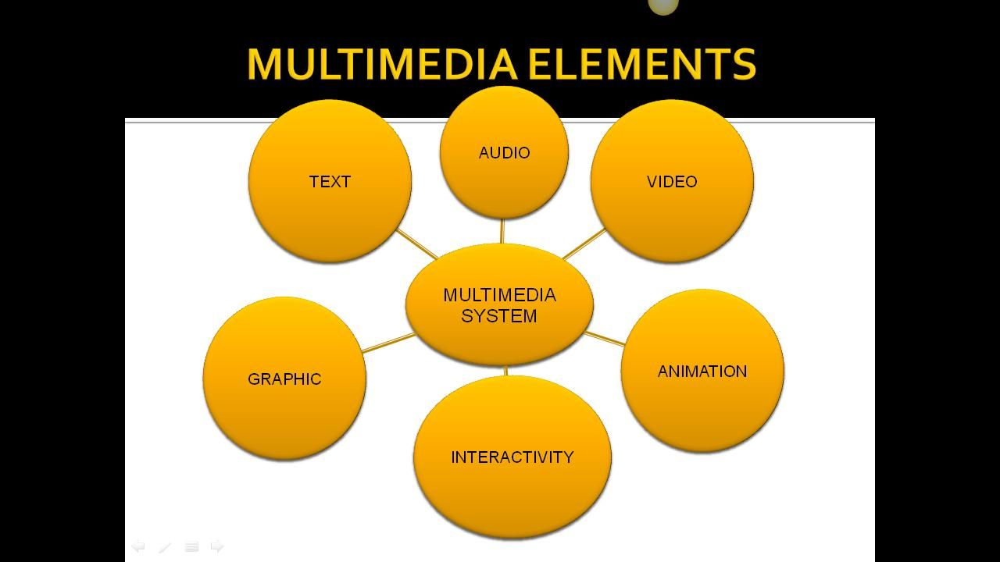
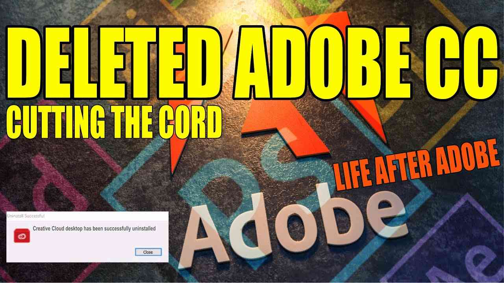
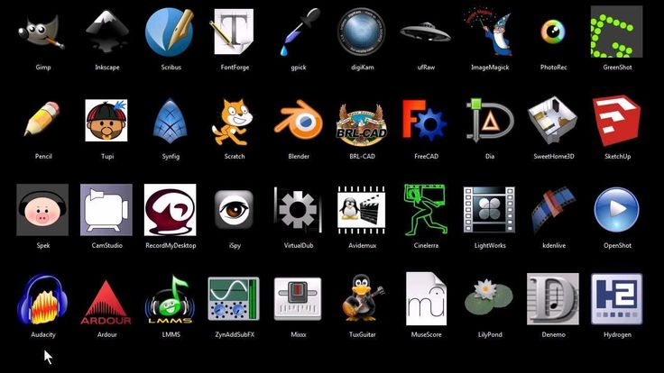

The Web
Categorie
Multimedia
Profiel Content Creator

De Content Creator bedient zich met tools die in staat stellen alle vormen van inhoud te vervaardigen. De tools die aan de orde komen, zijn voor animatie, beeld, DTP, foto, geluid, handleidingen manuals, screenwriting, vector based tekenen, Video en Streaming Media productie en video Editing. Het is een complexe omgeving en ontwikkeling geschiedt meestal door speciaal daartoe opgeleide medewerkers. Alhoewel iemand met IT affiniteit "eenvoudige" resultaten kan behalen.
→ zie: Wikipedia Multimedia
Welke tooling niet

Om redenen elders op deze website uitgelegd richt keuze van tooling zich op free open source software (FOSS). Dus niet bijvoorbeeld tooling van Adobe die als marktleider in dit vakgebied gezien kan worden. Alhoewel dus elders beschreven nog even in het kort achterliggende redenen van "niet"-Adobe:
→ Verdienmodel van eénmalige aanschaf naar abonnement met periodieke betalingen Software as a Service (Saas) met dus op termijn voor gebruiker veel duurder
→ Van installatie op eigen computer naar deels Cloud computing met aldus geen absolute controle over eigen werk. Onlangs werd geheel Venezuela afgesloten vanwege president Trump opgelegde handelsbeperkingen. Ook schijnt het zo te zijn dat bij grote hoeveelheid RAW opslag, de gebruiker twee weken de tijd krijgt om te converteren naar jpg anders delete all
→ Van eenmaal aangeschaft en blijven functioneren naar verplichte updates anders dreiging van rechtzaak ivm copyright schending. Bijkomstig gevolg daarvan is, is dat bij gebruik van Apple macOS, de nieuwste Adobe versies ook de nieuwste macOS versie vereisen. En nu wil het geval dat fabrikant Apple oudere computers niet ondersteund voor nieuwe OS versies. Aldus door Adobe's verplichte updates dus ook de apparatuur geupdate moet worden. Dit is voor gebruiker een kostbare strategie en zeker niet eco vriendelijk
→ De creative cloud software doet zeer actief aan telemetrie waarbij oncontroleerbaar data van gebruiker naar servers van Adobe wordt gezonden. En dat van computer laten weglekken van data is niet AVG compliant
Tooling keuze

Deze website richt zich op free open source software (FOSS) en gebruiker verkeert in degelukkige omstandigheid dat er veel keuze is, zo ook in de categorie multimedia. Er is een keuze gemaakt op basis van meest populaire tools, degene die het meeste gebruikt worden. Naast "per soort" vermelde tools zijn er meestal van die soort een reeks andere mogelijkheden en gebruiker zou eigenlijk zelf een verkenning moeten doen en programma's uitproberen. Of anders gezegd, gedane keuzes zijn arbitrair
→ zie: FOSS artikel